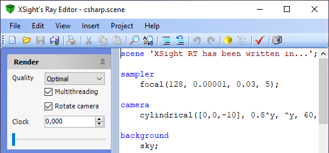

The Editor Window is the central point in XSight RT, where most actions take place.

This window is structured as follows:
- Code editor: it's based on a code editor developed in C# for the Freya Programming Language project. You'll find here a short reference about keyboard shortcuts.
- Scripting tools: the code editor and the main menu provides support for writing SILLY scripts.
- Render parameters panel: the panel at the left of the code editor contains the most frequently used parameters to control the render algorithm.
- Scene Tree: it's a collapsable panel which shows the component tree for the last compiled or rendered scene. You can show the scene tree both from a menu command in the editor window and from the image window.
See also
Home |
Using XSight's Ray Editor |
Scripting tools |
Keyboard shortcuts |
Rendering |
Motion Blur |
Scene tree |
Image Window |
Animation Form |
Scene Wizard |
Noise Generator |
XSight RT Options